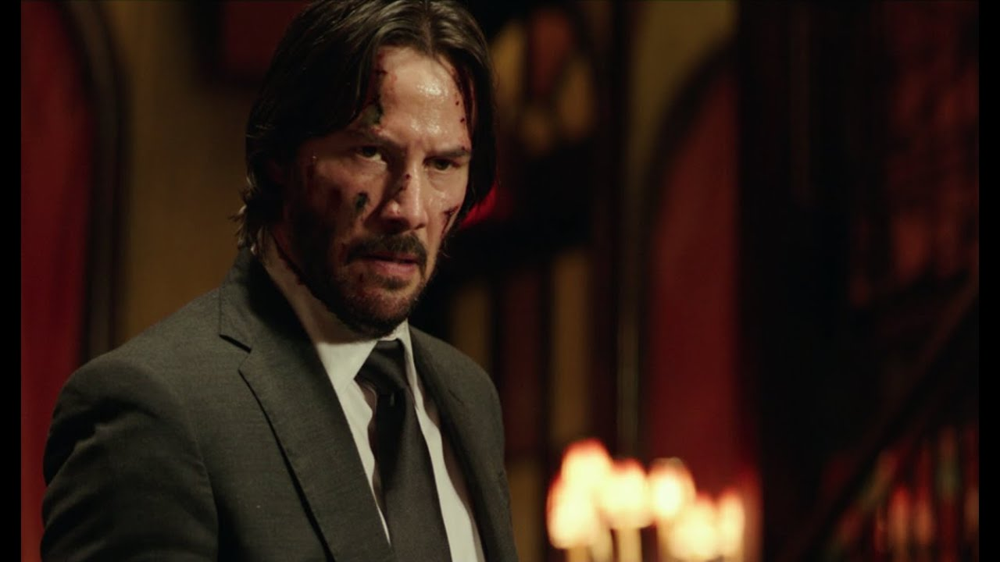

John wick one sets a tone as you enter the movie, it swirls you into the world of john wick, assasin and husband whos been wronged and must get revenge.
in conclusion john wick 1 is a better film
As a film, John Wick 2 is superior to the original for several reasons. The first of which has to do with the world building within the universe of the films. John Wick 2 expands greatly on the concepts and foundations introduced in the first film, and the world of assassins the films take place in. More emphasis is placed on the overall structure, rules, and consequences that the characters are bound to. While the first John Wick introduced us to the universe, JW2 made viewers truly invested in it.
While the action in the first film revolutionized the action genre, JW2 takes said action, and dials it up to eleven. In the film, John Wick isn’t just facing ordinary goons, but rather highly armed and far more experienced foes, who pose a far greater threat to him. This challenge adds to John Wick’s character, by showing us that even with this increase in difficulty, John is still neigh-unstoppable. One particular highlight of the action in this movie is shown in the Museum scene, which features an area made entirely out of mirrors, where John has to fight his enemy’s elite bodyguards in spectacular fashion. Compared to the action in the first film, JW2 sets a precedent for over-the-top and visually stunning action scenes that would define the John Wick franchise.
Secondly, the characters in JW2 are a cut above who appears in the original, with the most memorable being the antagonist, Santino D’Antonio. In the first film, the main antagonists, Viggo and his son, Iosef. In the first John Wick film, Viggo and Iosef serve more as a way to introduce and provide exposition on John Wick, while not truly posing much of a challenge to him. Santino D’Antonio, on the other hand, is a villain who creates more of a connection between himself and the audience, by sheer value of how much viewers will likely grow to hate him. His actions towards John paint him as a cowardly, manipulative, and arrogant man, who actively chooses to antagonize John, goading him throughout the film as John works for him. As such, viewers are innately more connected to John, as we can actively sympathize with his hatred. While viewers might’ve almost felt bad for Iosef, or almost liked Viggo, most would likely have downright despised Santino, making him a more compelling antagonist.
Ultimately, while the first John Wick film is an amazing movie, the second instalment goes above and beyond in expanding the universe, making increasingly epic action scenes, and adding depth to characters. It is for these reasons, that make John Wick 2 objectively the better film.
